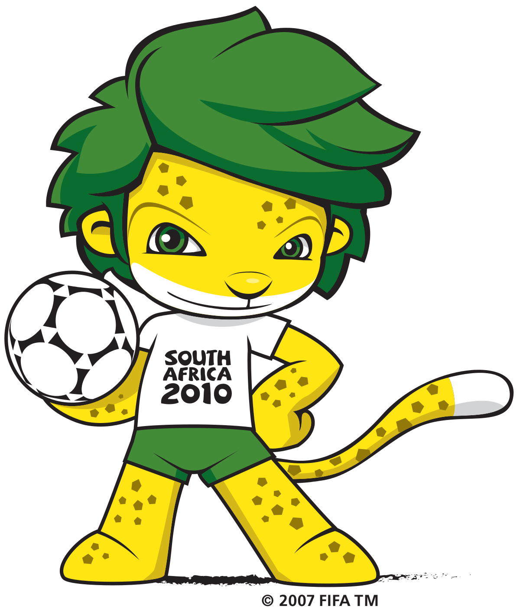

Buku Catatan PialaBola Dunia
with GSAP ScrollTrigger & Locomotive Scroll
Piala Bola dunia 2022 Qatar bisa jadi akan menjadi panggung terakhir dari 2 GOAT(Greatest of All Time) dalam hampir 15 tahun terakhir. Mereka ialah Cristiano Ronaldo dan Lionel Messi, kedua pemain tersebut telah meraih banyak gelar baik individu maupun club, tetapi sama-sama belum pernah mencicipi gelar piala bola dunia. Akankah salah satu diantara mereka akan memenangkan nya? Atau di penghujung karir nya, mereka pulang tanpa piala bergengsi tersebut? Mari kita saksikan


Maskot Piala Bola Dunia dari masa ke masa
